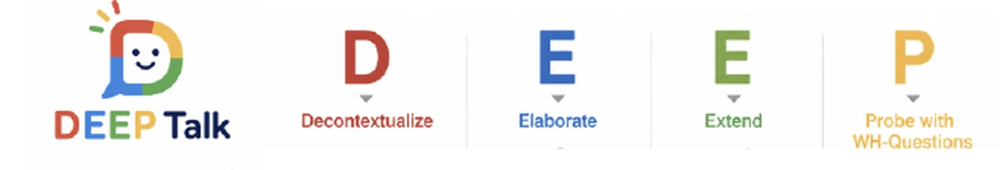

Overview / 01
Adult–child conversation is modeled as a network of connected concepts. DEEP Talk adds direction and agency to that network, showing who introduced an idea, how the other partner responded, and whether the idea was sustained across turns, so that the quality, sequence, and reciprocity of talk can be studied as authentic evidence of children's developing language and literacy.
In depth
Read-alouds, storytelling, and everyday conversation are among the richest contexts for early literacy. Sustained back-and-forth, elaboration, decontextualized talk, and open-ended questions support the oral language, vocabulary, narrative understanding, and knowledge building that children draw on as they learn to comprehend texts, retell and compose stories, and become readers and writers.
Building on research on teachers' instructional language, computational analyses of vocabulary depth, and studies of how adults and children jointly develop topics and construct meaning across turns, the DEEP Talk framework uses directed, agent-aware knowledge graphs to examine who introduces concepts, how adults respond to children's contributions, and how questions and elaborations lead to sustained conversation.
Why it is innovative. Many measures of early language environments focus on the amount of talk, and conventional semantic networks show which concepts co-occur. DEEP Talk adds who contributed each idea, how it was prompted, and whether it was taken up, so the quality, sequence, and reciprocity of conversation can be studied at scale as authentic evidence of developing vocabulary, inferencing, narrative skills, and language comprehension, while remaining interpretable for teachers and families.
Why it matters. The work informs dialogic reading, family-centered language supports, and the language-comprehension component of early reading instruction and intervention. A next step is to test, with intervention and assessment researchers, whether fine-grained conversational indicators complement established language and early literacy measures and help tailor support to children's developmental needs.
Patterns are always read alongside observation, children's work, and the interpretations of educators and families, so the work supports responsive teaching rather than reducing talk to counts.
Critical, human-centered lens
Talk is a multimodal sign system, not just word counts.
Transcripts and speech recognition favor some dialects and home languages; recognition accuracy and graph features are checked across language groups.
Graphs are reviewed with teachers against video and transcript, used for reflection and coaching, never to grade a conversation.
Across fields
Decontextualized talk, elaboration, and open questions during shared reading and play build the vocabulary depth, background knowledge, and explanatory language that later reading comprehension rests on. Knowledge graphs show not just how many words a child hears, but how ideas connect.
Children learn that their ideas matter when adults take them up. Following who introduces an idea and whether it is extended traces a developmental process: from adult-led scaffolding toward child-led reasoning, across ages and settings.
Speech recognition, speaker attribution, and language models extract concepts and links from natural conversation. Each node carries who introduced it and how it was prompted, so the graph records direction and uptake, not only co-occurrence.
Figures
Framework
DEEP Talk names four conversational moves that open space for children's reasoning. The knowledge graph then records which moves happened, who made them, and whether the ideas were taken up.

Talk that moves beyond the here and now: past experiences, future possibilities, and abstract ideas. It asks children to use language to represent things they cannot see.
Adding detail, description, and explanation to an idea already in the conversation, so a single word grows into a fuller account.
Building on the child's own idea and connecting it to a new concept, so the child's contribution becomes the starting point for learning.
Open what, why, and how questions that invite prediction and explanation rather than a single right answer.
DEEP Talk looks past how many words are spoken to what kind of talk takes place. Each question and response is coded by type, so the graph shows how talk invites children to think.
Open what, why, and how questions that invite many answers, compared with yes/no or single-answer questions.
Questions about what is on the page, compared with questions that ask children to predict, explain, or connect.
Talk about what is in front of the child, compared with talk about past events, future possibilities, and abstract ideas.
Whether the adult revoices, elaborates, or extends the child's answer, and whether the idea is sustained across turns.
Questions initiated by children as well as adults, a sign of curiosity and growing epistemic agency.
DEEP Talk brings together perspectives that are usually studied separately, so a single conversation can be understood from each at the same time.
Connects fine-grained talk to the quality of the language and literacy environment, alongside established measures such as ECERS-3, QCIT, ELLCO, and LISn.
Captures how questions, predictions, and explanations drive children's inquiry in science, read-alouds, and play, and who leads that inquiry.
Natural language processing and directed knowledge graphs make these patterns measurable across many conversations, settings, and languages.
DEEP Talk indicators are read as evidence of the language and literacy understandings that underlie reading comprehension and early writing.
Depth of conceptual connections among words, topics, and ideas, not only the number of words heard.
Why and how questions, predictions, and explanations that move beyond what is on the page.
Talk about past and future events and ideas sustained across turns, the building blocks of retelling and story understanding.
Whether children's ideas are taken up, extended, and connected, reflecting how meaning is constructed together.
Talk about characters, illustrations, and information in books, linking what children hear with what they see on the page.
Retellings, dictated stories, and drawings that carry ideas from conversation into children's own texts.
Questions such as who tells the story and whose perspective is missing, asked in developmentally appropriate ways.
Concrete moves teachers, librarians, and families can use during read-alouds to invite children's ideas and sustain text-based discussion.
Family-centered language supports grounded in everyday routines, home languages, and children's interests.
Conversational indicators that may complement established language and early literacy measures in planning and monitoring reading and writing support.
Circle size shows who leads meaning-making: larger circles are concepts the child led more often.
Line color shows who initiated the idea: green for the child, blue for shared, gray for the adult.
Line style shows the type of prompt: solid lines follow open prompts, dashed lines follow closed prompts.
Line shading shows uptake: opaque lines are ideas that were sustained, faded lines are ideas that were not taken up.
Arrows show the direction of meaning-making, from the idea that came first to the idea it led to.
How it works
Adult–child conversations from naturalistic corpora and classroom recordings are transcribed and parsed.
Concepts become nodes, and co-occurrence and semantic similarity become edges.
Each link records who initiated it (child, adult, or shared) and whether the other partner took it up.
Network structure is linked to children's vocabulary, language, and literacy outcomes.
Findings
The organization and direction of conceptual links reveal aspects of learning that word counts and final answers miss.
Network structure shifts with activity context: book reading, play, and other everyday routines create different opportunities to connect and elaborate ideas.
Semantic network connectivity in adult–child talk is linked to children's vocabulary development.
Output
Leveraging natural language processing to deepen understanding of parent–child interaction processes and language development
Jang, W., Horm, Kwon, Lu, Kasak & Park · Family Relations, 74(3), 1146–1173 · doi
Contextual modulation of adult–child language interaction: Semantic network connectivity and children's vocabulary development
Jang, W. & Leech · Education Sciences, 13(11), 1084 · doi
Early childhood teachers' characteristics, complex talk, and children's language and literacy development
Jang, W. · Doctoral dissertation, University of North Carolina at Chapel Hill · doi
Leveraging Machine Learning and Natural Language Processing algorithms for a deeper understanding of adult-child language interactions
University of Hong Kong, Virtual
Text mining mothers’ and fathers’ language during toddler free play for sentimental associations
Poster presented at the 2024 OU UReCA Showcase, Norman, OK
Application of Machine Learning and Natural Language Processing in child and family studies
Seoul National University, Virtual
Leveraging Big Data to improve the quality in language and literacy learning environments
Ewha Womans University, Virtual
Early childhood teachers’ characteristics, complex talk, and children’s language and literacy development
Paper presented at the 2023 National Association of Early Childhood Teacher Educators (NAECTE) Conference. Virtual
Using distributional semantics to understand preschoolers’ depth of vocabulary
Poster presented at the 2023 Society for Research in Child Development (SRCD) Conference, Salt Lake City, UT
When Machine Learning meets early childhood education: Leveraging Big Data to improve quality in language learning environments
OU Dodge College of Arts and Sciences, Norman, OK. University of North Carolina at Chapel Hill UNC School of Education GSA Diversity and Equity Chair (09.2021-08.2022) UNC University Teaching Awards Committee (07.2021-01.2022) UNC & Duke Wonder of Learning Exhibition on Reggio Emilia (02.2017-04.2017)
Contextual modulation of parent-child conversation: Semantic network connectivity and children’s vocabulary development
Poster presented at the 2022 Cognitive Development Society (CDS) Conference, Madison, WI
Complex preschool teacher talk, content area, and child outcome
Paper presented at the 2022 American Educational Research Association (AERA) Conference, San Diego, CA
Parent-child interaction corpus analysis: Using computational linguistics and machine learning approaches
FPG Child Development Institute Brain and Early Experiences Lab, Chapel Hill, NC
The contextual modulation of academic language in early care and education: Implications for B-K teacher education
Paper presented at the 2021 National Association of Early Childhood Teacher Educators (NAECTE) Conference. Virtual
Using network science as a tool for understanding adult-child language interaction in diverse activity contexts
Paper presented at the 83rd Annual National Council on Family Relations (NCFR) Conference. Virtual
Applications of natural language processing (NLP) in educational research
Poster presented at the 2021 Conference on Artificial Intelligence in Smart Cities. Virtual
Complex preschool teacher-child talk, types of activity settings, and child outcomes
Poster presented at the 2021 Society for Research in Child Development (SRCD) Conference. Virtual
Word embeddings and their relations to distributional semantics in educational linguistics research
Paper presented at the 16th UNCG Regional Mathematics and Statistics Conference (RMSC). Virtual